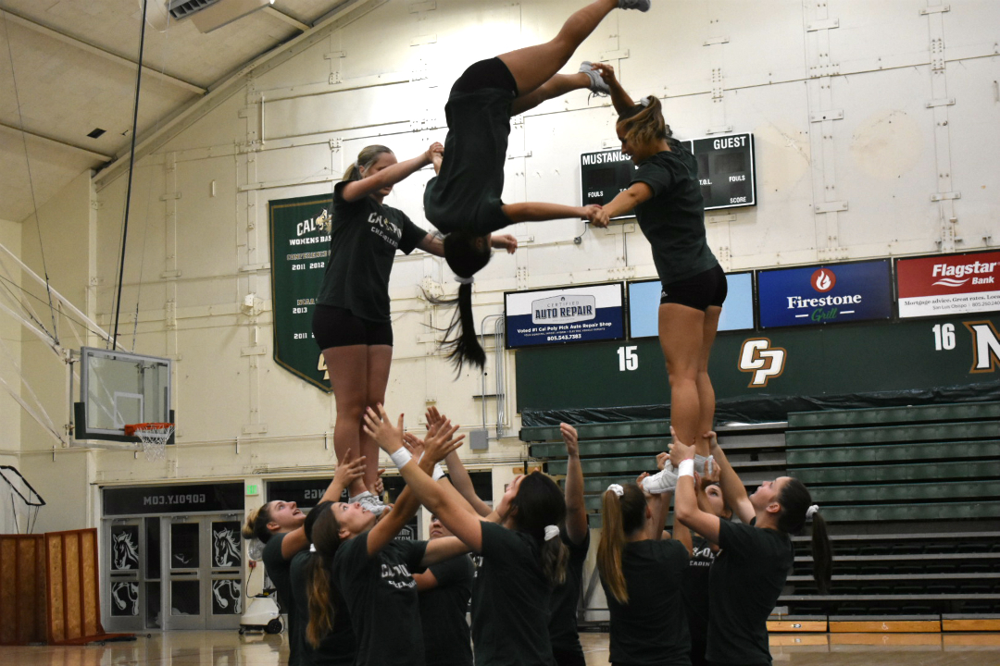

What really goes on at practice?
Cal Poly Cheer
1 / 11

The team setting up the cheer mats at the beginning of practice (Mott Gym- 10/15/19)
2 / 11

The team jogging with ankle weights on as part of their warm-up (Mott Gym- 10/15/19)
3 / 11
A cheerleader's necessities for a long cheer practice (Mott Gym- 10/15/19).
4 / 11
The team practicing their tumbling (Mott Gym- 10/15/19)
5 / 11
"Injuries occur very frequently in cheer. It is not uncommon for my teammates to tape up their ankles or wrists before practice. It's just part of the sport." -Kinesiology senior Rachel Bergen wrapping her teammate’s foot (Mott Gym- 10/15/19)
6 / 11
“Flying requires a lot of trust in your bases (those who are throwing and catching) and sometimes it’s scary when trying new skills, but it’s a lot of fun and it’s harder than people may think.”-Business administration junior Edith Cui (Mott Gym- 10/15/19)
7 / 11

Edith Cui (the highest flyer in the middle) doing the splits at the top of the high-splits stunt (Mott Gym- 10/15/19)
8 / 11

Edith Cui coming down from the high-splits stunt with a forward flip (Mott Gym-10/15/19)
9 / 11
Edith Cui landing from the high-splits stunt as her teammates catch her (Mott Gym- 10/15/19
10 / 11

"The best part about stunting is working together with my teammates and finally hitting a skill we've been trying to get!" -Liberal studies senior Leah Brill (bottom far left) (Mott Gym- 10/15/19)
11 / 11
The team builds one final pyramid at practice (Mott Gym-10/15/19)